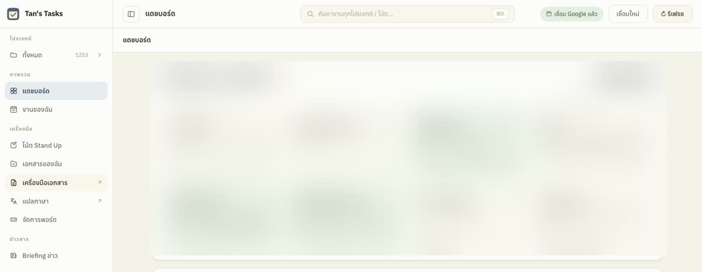
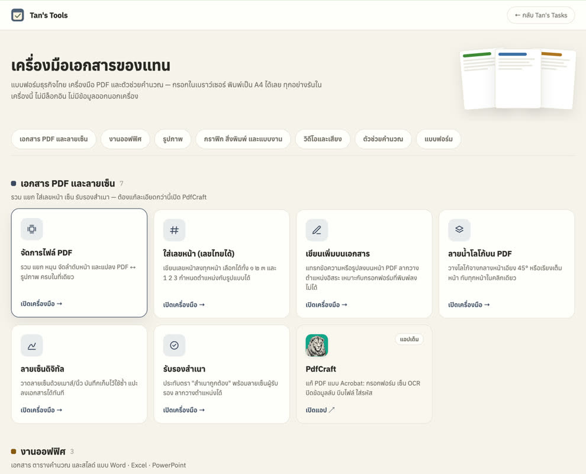
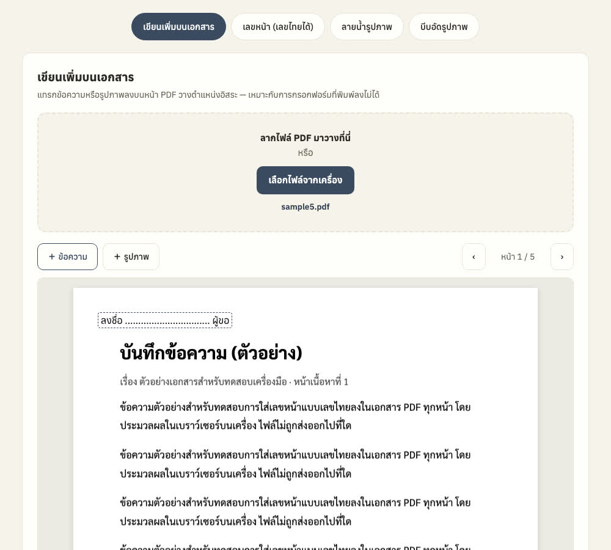
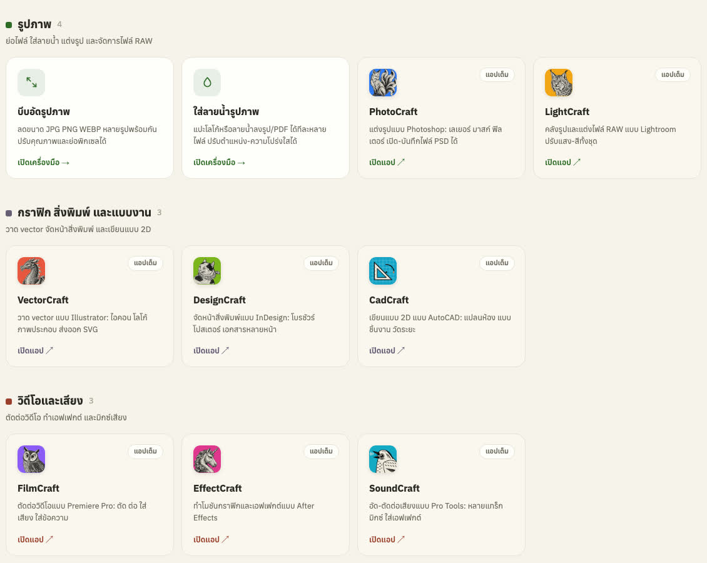
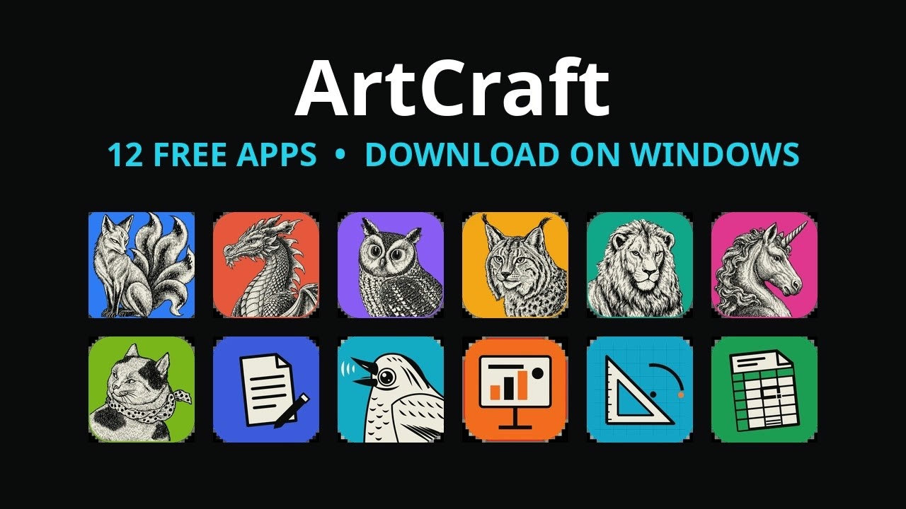
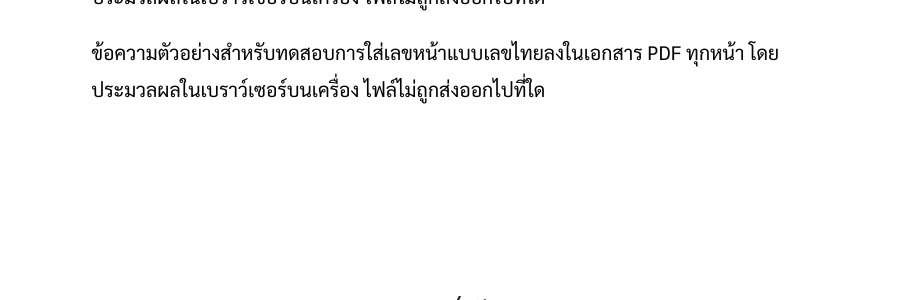
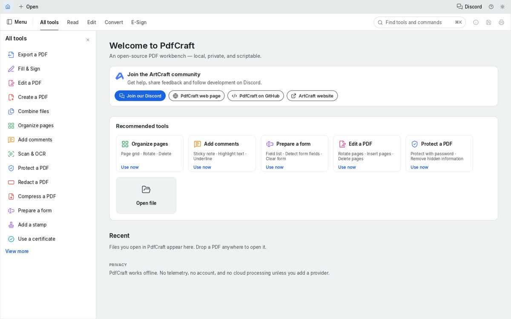

Tan's Tools
A toolbox where I write only the missing pieces and place good open-source apps next to them. The result: daily document work gets done from my own machine, without opening unfamiliar websites.

Add page numbers, write on a PDF, stamp a logo, shrink images, unlock a PDF before sending it to AI, and open full apps for photo editing, slides and video editing. All of it sits on one page of a tool I already open every day, with no sign-up and no uploading files to sites I don't know.
Small document jobs come up every day, and each one sent me to someone else's website
Each job takes a few minutes, but getting to the right tool always took longer than the job itself

To add page numbers to one file, I had to search the web, pick the site that looked most trustworthy, upload the file, wait, and download it again, even though the file might contain an ID number, a signature or work documents. There are plenty of good free tools already. They just weren't within reach.
Private files have to leave the machine first
Most file-conversion sites run on their own servers, so a document with personal data has to be uploaded before you get the edited file back.
A few files in, a sign-up page appears
They are free only up to a certain size, number of files or number of days. Repeat the same job the next day and you are back to looking for another site.
Hardly anyone supports Thai numerals and Thai fonts
Many government and company documents number their pages with Thai digits. Typical tools only offer 1 2 3, and Thai text turns into empty boxes.
Locked PDFs can't be sent to AI
Files with a password or copy restriction can't be read by AI, so they have to be unlocked first, which leads back to uploading the file to a website again.
Heavier jobs meant installing apps one by one
Layered photo editing, slides or short video edits meant installing large programs or paying for a monthly subscription, even for occasional use.
Put the tools where I already am every day
Tan's Tasks is a personal tool I open every morning to see today's work. It runs on my machine and already has its own small server, so adding one more page costs almost nothing.

| Option | What it takes each time | Where the file goes | Why it was dropped / picked |
|---|---|---|---|
| Keep using conversion sites | Search, upload, wait, download | That site's server | Convenient the first time, but every time I had to decide again which site to trust, and I ran into free-account limits |
| Install separate apps one by one | Install, update, remember what lives where | On my machine | Files stay on the machine, but the dock fills up with icons and many of them are monthly subscriptions |
| One page inside Tan's Tasks Chosen | Open the tools page and pick a job | On my machine | Write only what nobody else has built, and use existing open-source apps for the heavy work: download them to the machine once, update with one command |
Write as little as possible — if a good open-source tool already exists, use it and credit its authors. Only fill the gaps nobody has filled, such as Thai-numeral page numbers or unlocking a PDF without uploading it
Group by “the job to be done”, not by who wrote the tool
Someone adding a watermark doesn't care where the tool came from, so quick tools and full apps share the same section. Full apps carry a label and open in a new tab

PDF documents and signatures
Page numbers, adding text, logo stamps, unlocking — for finer edits, open PdfCraft
Office work
Documents, spreadsheets and slides, like Word · Excel · PowerPoint
Images
Shrink files, edit photos and handle RAW files
Graphics, print and drafting
Vector drawing, print layout and 2D drafting
Video and audio
Video editing, effects and audio mixing
The real toolbox also holds several basic free tools from other sources that I keep on my machine, such as merging, splitting and rotating PDF pages, and signatures. That part isn't my work, so it isn't shown here.
Quick tools I wrote — filling only the gaps nobody else filled
One page, everything processed in the browser, files are not sent anywhere

Page numbers (Thai numerals)
Writes a page number on every page in Thai or Arabic digits, with formats like “Page 5”, “5 / 12” or “- 5 -”
Write on a document
Insert text or images onto a PDF page and drag them into place. Useful for forms you can't type into
Logo watermark on PDF
Places a faint logo across the middle of the page at 45°, or tiled over the whole page, on every page in one click
Compress images
Shrinks JPG, PNG and WEBP files in batches, with adjustable quality and pixel size
Unlock PDF
Removes the password and copy restrictions from a PDF so it can be sent to AI. Works from the local web page or from the command line
Unlocking PDFs before sending them to AI — just qpdf, no uploads
The real work of this tool is one line. The rest is making sure nobody has to remember that line
 Wrong password, explained in Thai
Wrong password, explained in Thai Correct password, you get -unlocked.pdf
Correct password, you get -unlocked.pdflocalhost:3777 — drop a file, enter a password if there is one, and press one button. Behind it is qpdf --decrypt- From Terminal —
unlock.shcallsqpdf --decrypt. If the file only blocks copying, it unlocks right away; if it has an open password, add the password at the end. You get a new file named-unlocked.pdfin the same folder - Drop a file on the local web page —
bun server.jsopens a small page atlocalhost:3777with an optional password field, and says in Thai when the password is wrong - Double-click a single file — a
.commandfile on macOS starts the server and opens the browser for you, no Terminal needed
12 full apps from ArtCraft — one script to download, one line to serve
ArtCraft is a suite of open-source apps that also have browser versions built with WebAssembly. There was no need to rewrite these apps, only to bring the files onto the machine and route them correctly.

Ask GitHub for the latest release
craft-fetch.sh checks each app in turn and takes only the zip file for the web version. If an app doesn't have one, it skips it and says so
Unzip into that app's folder
Delete the old files and put the new ones in place. Running it again is the update, so there's no need to remember which app is on which version
Fetch each app's real icon too
Cards in the toolbox use the app's own icon. If one can't be found, it falls back to a line icon I drew
The existing server serves them at /craft/<app>/
No new server and no build step. It uses the same Python server Tan's Tasks already runs

All 12 apps are made by the ArtCraft team and released as open source under the Apache-2.0 license. My part is the download script, serving them from the machine, and placing the apps into job-based sections of the toolbox.
Five things I ran into bringing other people's work into my own setup
Reusing what already exists really does mean writing less, but what you do write is the glue, and the glue is where things break most quietly

The PDF unlocker stuck on “Loading tool...” forever
The unlocker uses qpdf compiled to WebAssembly, and it requests /wasm/qpdf.wasm and chunk files under /_next/ from the site root, not from the folder where it lives. The server quietly answered 404, so the screen just kept spinning with no error message to see
Merging or rotating a PDF made the text come out soft
The basic PDF tools I keep around render every page as an image at most 1600 pixels on the long side and compress it to JPEG at a fixed quality, so every result was blurry, and PDF → image always produced large PNG files
Thai text on the PDF turned into empty boxes
The PDF-writing library ships with standard fonts that have no Thai glyphs, so Thai-digit page numbers or the Thai word for “page” came out as empty boxes
Large WebAssembly apps need to open fast the second time, but show the new version after an update
Cache every file for a long time and you still see the old app after an update. Cache nothing and every launch downloads tens of megabytes again. And a .wasm file served with the wrong type stops the browser from using fast compilation
.js and .wasm files already have a version hash in their names, so they can be cached for a year, while index.html is revalidated every time, and .wasm is served as application/wasmA server that opens files by the name in the URL can open other files on the machine too
If the server takes a file name from the URL and joins it straight onto a path, typing ../ steps out of the app folder to read other files. And if the app hasn't been downloaded yet, the page is just blank with no explanation
craft-fetch.sh needs to run firstThe rules for what gets into the box
A good toolbox is one you can reach into right away, without worrying about where your files end up

/craft/pdfcraft/ — no account, no uploads, and the owner's source files are not modified- A real, repeated job comes first, then the tool — every tool in the box came from document work I kept running into myself, not from wanting a complete set of tools
- Files stay on the machine — quick tools run in the browser, the unlocker uses qpdf locally, and the ArtCraft apps are served from a local folder. There is no upload step
- No sign-up, no monthly fee — open the page and use it. No account, no daily quota
- Use what already exists, and credit the owners — the full apps belong to ArtCraft, used under the Apache-2.0 license, and nobody's source files are modified. All adjustments happen at serve time
- Easy to hand off to AI — an unlocked PDF opens and copies text normally, ready to drop into an AI chat
The quick tools page loads the PDF library and a Thai font from a CDN the first time it opens, so it needs an internet connection, but the user's own files are not sent along · The ArtCraft apps add up to several hundred megabytes, so they are not kept in git; craft-fetch.sh has to be run on each machine that uses them